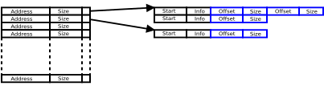

SFrame-based stack unwinding for the kernel
A process's call stack (normally) contains all of the information that is needed to recreate the chain of function calls that led to a given point in its execution. Each call pushes a frame onto the stack; that frame contains, among other things, the return address for the call. The problem is that exactly where that information lives on the stack is not always clear. Functions can (and do) put other information there, so there may be an arbitrary distance between the address in the stack pointer register and the base of the current call frame at any given time. That makes it hard for the kernel (or any program) to reliably work through the call chain on the stack.
One solution to the problem is to use frame pointers — dedicating a CPU register to always point to the base of the current call frame. The frame pointer will be saved to the call stack at a known offset for each function call, so frame pointers will reliably make the structure of the call stack clear. Unfortunately, frame pointers hurt performance; they occupy a CPU register, and must be saved and restored on each function call. As a result, building software (in both kernel and user space) without frame pointers is a common practice; indeed, it is the usual case.
Without frame pointers, the kernel cannot unwind the user-space call stack in the perf events subsystem. The best that can be done is to copy the user-space stack (through the kernel) to the application receiving the performance data, in the hope that the unwinding can be done in user space. Given the resolution at which performance data can be collected, the result is the copying of massive amounts of data, and a corresponding impact on the performance of the system.
Call-stack unwinding is not a new problem, of course. In user space, the solution has often involved debugging data generated in the DWARF format. DWARF data is voluminous and complicated to interpret, though; handling it properly requires implementing a special-purpose virtual machine. Trying to use DWARF in the kernel is a good way to lower one's popularity in that community.
So DWARF is not an answer to this problem. Some years ago, developers working on live patching (which also needs reliable stack unwinding) came up with a new data format called ORC; it is far simpler than DWARF and relatively compact. ORC has been a part of the kernel's build process ever since, but it has never been adapted to user space.
Enter SFrame
At least, ORC hadn't been adapted to user space until the SFrame project (which truly needs an amusing Lord-of-the-Rings-inspired name) was launched. SFrame is an ORC-inspired format that is designed to be as compact as possible. In an executable file that has been built with SFrame data, there is a special ELF section containing two tables that look somewhat like this:

The left-hand table (the "frame descriptor entries") contains one entry for each function; the table is sorted by virtual address. When the need comes to unwind a call stack, the first step is to take the current program counter and, using a binary search, find the frame descriptor entry that includes that address. Each entry contains, beyond the base address for the function, pointers to one or more "frame row entries". Each of those entries contains between one and 15 triplets with start and size fields describing a portion of the function's code, and an associated frame-base offset. The offset of the program counter from the base address is used to find the relevant triplet which, in turn, gives the offset from the current stack pointer to the base of the call frame. From there, the process can be repeated to work up the call stack, one frame at a time.
The GNU toolchain has the ability to build executables with SFrame data, though it seems that some of that support is still stabilizing. SFrame capability is evidently coming to LLVM soon as well. Thus far, though, the kernel is unable to make use of that data to generate user-space call traces.
See this article for more information about SFrame. There is a specification for the v2 SFrame format available; this is the format that the GNU toolchain currently supports. Version 3 of the SFrame format is under development, seemingly with the goal of deployment before SFrame is widely used. The new version adds some flexibility for finding the location of the top frame, the elimination of unaligned data fields (which are explicitly used by the current format to reduce its memory requirements), support for signal frames, and s390x architecture support, among other things.
Using SFrame in the kernel
Back in January Josh Poimboeuf posted a patch series adding support for SFrame for user-space call-stack unwinding in the perf events subsystem. He has since moved on to other projects; Steve Rostedt has picked up the work and is trying to push it through to completion. The original series is now broken into three core chunks, each of which addresses a part of the problem.
The SFrame data, being stored in an ELF section, can be mapped into a process's address space along with the rest of the executable. Accessing that data from the kernel, though, is subject to all of the constraints that apply to user-space memory. Notably, this data may be mapped into the address space, but it might not be resident in RAM, so the kernel must be prepared to take page faults when accessing it.
That, in turn, means that the kernel can only access SFrame data when it is running in process context. Data from the system's performance monitoring unit, though, tends to be delivered via interrupts. So the code that handles those interrupts, and which generates the kernel portion of the stack trace, cannot do the user-space unwinding. That work has to be deferred until a safe time, which is usually just before the kernel returns back to user space.
So the first patch series adds the infrastructure for this deferred unwinding. When the need to unwind a user-space stack is detected, a work item is set up and attached using the task_work mechanism; the kernel will then ensure that this work is done at a time when user-space memory access is safe. Support for deferred, in-kernel stack unwinding on systems where frame pointers are in use is also added as part of this series.
The second series teaches the perf events subsystem to use this new infrastructure. The resulting interface for user space is somewhat interesting. A call into the kernel can generate a large number of performance events, each of which may have a stack trace associated with it. But the user-space portion of that trace can only be created just before the return to user space. So the perf events subsystem will report any number of kernel-side traces, followed by a single user-space trace at the end. Since the user-space side of the call chain does not change while this is happening, a single trace is all that is needed. User space must then put the pieces back together to obtain the full trace. The last patch in the series updates the perf tool to perform this merging and output unified call chains.
Finally, the third series adds SFrame support to all of this machinery. When an executable is loaded, any SFrame sections are mapped as well. Within the kernel, a maple tree is used to track the SFrame sections associated with each text range in the executable. The kernel does not, however, track the SFrame sections associated with shared libraries, so the series contains a new prctl() operation so that the C library can provide that information explicitly. That part of the API is likely to change (the relevant patch suggests that a separate system call should be added) before the series is merged.
With the SFrame information at hand, using it to generate stack traces is a relatively straightforward job; the kernel just has to use the SFrame tables to work through the frames on the stack. The result should be fast and reliable, with a minimal impact on the performance of the workload being measured.
The sum total of this work is quite a bit of new infrastructure added to
the core kernel, including code that runs in some of the most constrained
contexts. So the chances are good that there are still some minor problems
to work out. The bulk of the hard work would appear to be done, though.
It may take another development cycle or three, but the multi-year project
to get SFrame support into the kernel would appear to be reaching its
conclusion.
| Index entries for this article | |
|---|---|
| Kernel | Development tools/SFrame |
| Kernel | Releases/6.19 |
Posted Jul 12, 2025 18:35 UTC (Sat)
by DemiMarie (subscriber, #164188)
[Link]
Posted Jul 12, 2025 23:04 UTC (Sat)
by jreiser (subscriber, #11027)
[Link] (3 responses)
Posted Jul 14, 2025 7:44 UTC (Mon)
by taladar (subscriber, #68407)
[Link]
Posted Jul 14, 2025 14:22 UTC (Mon)
by willy (subscriber, #9762)
[Link] (1 responses)
Is there any prior work in this area we can steal^W benefit from?
Posted Jul 14, 2025 21:40 UTC (Mon)
by Cyberax (✭ supporter ✭, #52523)
[Link]
Not really. In particular, this makes debugging the coroutine-heavy code a pure nightmare. Debugger becomes worse than useless.
What I'd love is to have a weak link to the "caller frame". It's OK for it to be garbage-collected if the chain becomes too long.
Posted Jul 12, 2025 23:56 UTC (Sat)
by SLi (subscriber, #53131)
[Link] (7 responses)
Indeed. What can we come up with that doesn't sound completely stupid?
Smeagol? Shelob (since it unwinds tangled stacks)? Framewise Gamgee? Framebeard? BackAgain?
Posted Jul 13, 2025 5:25 UTC (Sun)
by magfr (subscriber, #16052)
[Link] (2 responses)
Posted Jul 14, 2025 7:45 UTC (Mon)
by taladar (subscriber, #68407)
[Link] (1 responses)
Posted Jul 14, 2025 23:32 UTC (Mon)
by himi (subscriber, #340)
[Link]
Posted Jul 13, 2025 9:12 UTC (Sun)
by excors (subscriber, #95769)
[Link] (2 responses)
Posted Jul 13, 2025 10:27 UTC (Sun)
by SLi (subscriber, #53131)
[Link]
CONFIG_DURBATULUK=y
Posted Jul 13, 2025 17:16 UTC (Sun)
by jemarch (subscriber, #116773)
[Link]
Posted Jul 13, 2025 21:27 UTC (Sun)
by Sesse (subscriber, #53779)
[Link]
Posted Jul 17, 2025 5:19 UTC (Thu)
by irogers (subscriber, #121692)
[Link] (1 responses)
Some other thoughts:
"Unfortunately, frame pointers hurt performance; they occupy a CPU register, and must be saved and restored on each function call." A register can be freed by holding the frame pointer in thread-local storage. Function call cost is addressed by inlining. x86 lacks any callee-save floating point registers which is likely a greater performance issue and unfortunately not addressed by the upcoming APX changes. A greater performance issue is the -fno-omit-frame-pointers is less well optimized by C compilers, for example, missing tail call optimizations.
Last year the return of frame pointers was heralded:
There have been calling conventions like ARM32's APCS that have very dense debug info but also would be reasonably easy to reverse engineer by walking the code forward until the function return is seen. Perhaps the code itself is the best debug format.
Posted Oct 8, 2025 7:47 UTC (Wed)
by ibhagat (subscriber, #133641)
[Link]
IOW, why not use an "EH Frame-like" solution?
It all comes down to the core distinction between the two formats: Stack Tracing versus Stack Unwinding.
Stack unwinding may be used for exception handling and needs to fully restore the register state of a previous function to continue execution there. Now state restoration needs to be done for the CFA, and all callee-saved registers minimally. So EH Frame needs to track a lot of entities. And the DWARF format, which it is based on, compacts this information by rather storing the DWARF opcodes (together with arguments) which you then execute to decipher the stack offsets, and sometimes DWARF expressions to encode more complex sequences. And this compaction mindset carries over into the encodings: EH Frame has LEB encoding.
Above are the prime causes of the complexities that show up in the implementation of EH Frame based stack tracers. Now, if the number of tracked entities is few(er) in number (say two or three), there are less reasons to continue with that sort of complexity. If you start to peel off these sources of complexities, you'll land at something that is not DWARF anymore anyway...And so encoding offsets directly like done in SFrame was explored, which has the added advantage that stack tracing is going to be fast.
SFrame is purpose-built for the simpler goal of stack tracing. By focusing solely on the task of stack tracing, SFrame makes different design choices across the board - from data retrieval to encodings for the data it tracks - to create a format that is dramatically simpler, smaller, and faster for its intended purpose.
> When perf is invoked to record system wide for a period of time like `perf record -e cycles -a sleep 10` any system call that hasn't transitioned to user code will only have the kernel side of the stack trace.
Umm...whats the issue here?
> Perhaps the code itself is the best debug format.
IMO, such reverse engineering is not viable, especially if the usecase is fast stack tracing. It has its own maintenance and adoption issues: arch-specific know-how, keeping up with ISA extensions et al to say the least.
Posted Aug 30, 2025 23:29 UTC (Sat)
by ibhagat (subscriber, #133641)
[Link]
If not the name now, may be we can make do with a cool logo for SFrame..
Posted Sep 8, 2025 1:54 UTC (Mon)
by maskray (subscriber, #112608)
[Link] (1 responses)
#define WIDTH(x) \
WIDTH(16);
My blog post had a TODO chapter about CTF Frame. I spent some time today to read the spec and add my analysis here: https://maskray.me/blog/2020-11-08-stack-unwinding#sframe
Posted Oct 8, 2025 6:54 UTC (Wed)
by ibhagat (subscriber, #133641)
[Link]
That said, while it may be efficient on big-endian z/Architecture, due to the load reversed instructions, this may not uniformly hold true for all arches. E.g., on aarch64 (see added insn in dependency chain for load_bswap_inc16):
load_inc16:
load_bswap_inc16:
Using LE universally then means that, for AArch64 BE e.g., it defers the task of endian swap on to the stack tracers. This is transferring more work build time to run time. It should be avoided. Keeping SFrame data in the same endianness as the machine it will be used for stacktracing on is more sensible IMO.
SFrame us more accurate too
Co-routines?
Co-routines?
Co-routines?
Co-routines?
Naming
Naming
Naming
Naming
Naming
Naming
Naming
Naming
Some thoughts
- Why a new encoding format, why not have a subset of dwarf that matches the limited stack frame encoding supported by sframes? Dwarf is compressed and there may be potential for reuse of the ELF section in areas like C++ exception delivery.
- When perf is invoked to record system wide for a period of time like `perf record -e cycles -a sleep 10` any system call that hasn't transitioned to user code will only have the kernel side of the stack trace.
- The bpf helper bpf_get_stackid with BPF_F_USER_STACK will just return a placeholder value which may break or cause additional memory usage in BPF programs.
- JITs need to be taught to generate/register/remove SFrames or perhaps some kind of JIT interface like GDB's can be devised.
https://www.brendangregg.com/blog/2024-03-17/the-return-o...
Some thoughts
SFrame logo
Little-endian format
typedef __UINT##x##_TYPE__ [[gnu::aligned(1)]] uint##x; \
uint##x load_inc##x(uint##x *p) { return *p+1; } \
uint##x load_bswap_inc##x(uint##x *p) { return __builtin_bswap##x(*p)+1; }; \
uint##x load_eq##x(uint##x *p) { return *p==3; } \
uint##x load_bswap_eq##x(uint##x *p) { return __builtin_bswap##x(*p)==3; }; \
WIDTH(32);
WIDTH(64);
Little-endian format
little-endian host and vice versa. I dont see how that can be avoided.
ldrh w0, [x0]
add w0, w0, 1
ret
ldrh w0, [x0]
rev16 w0, w0
add w0, w0, 1
ret